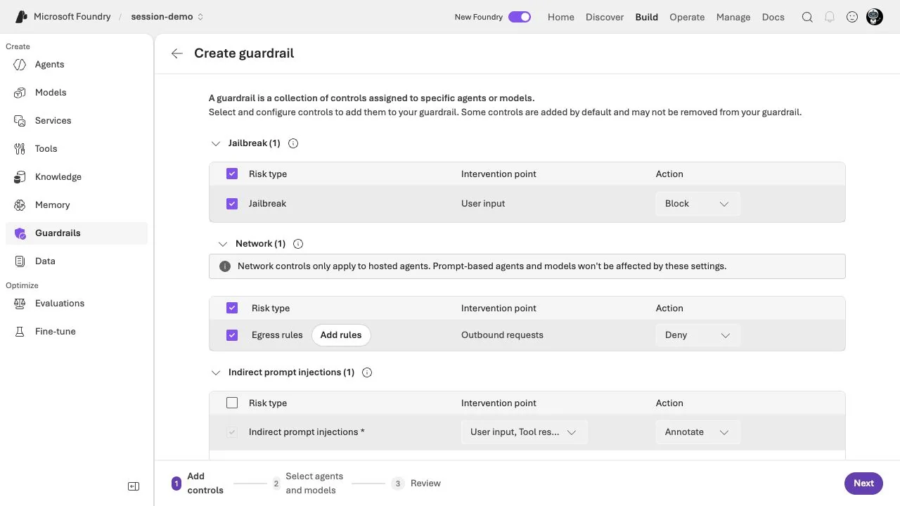
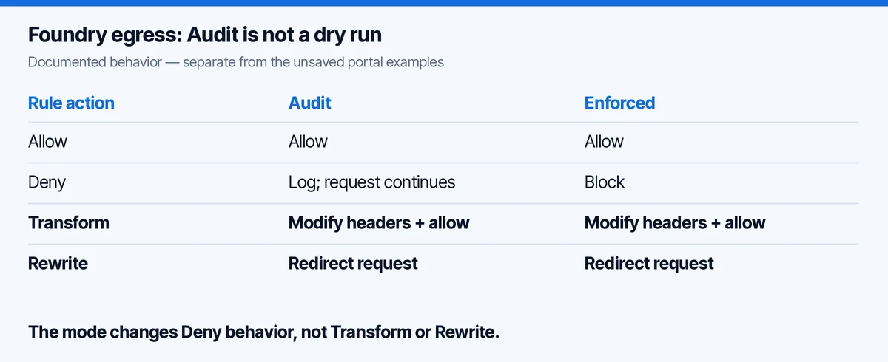
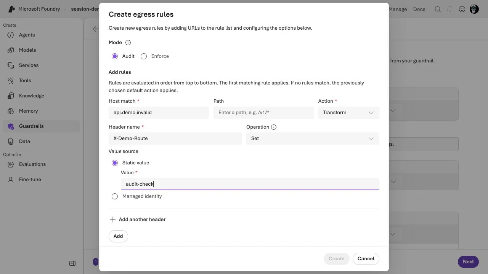
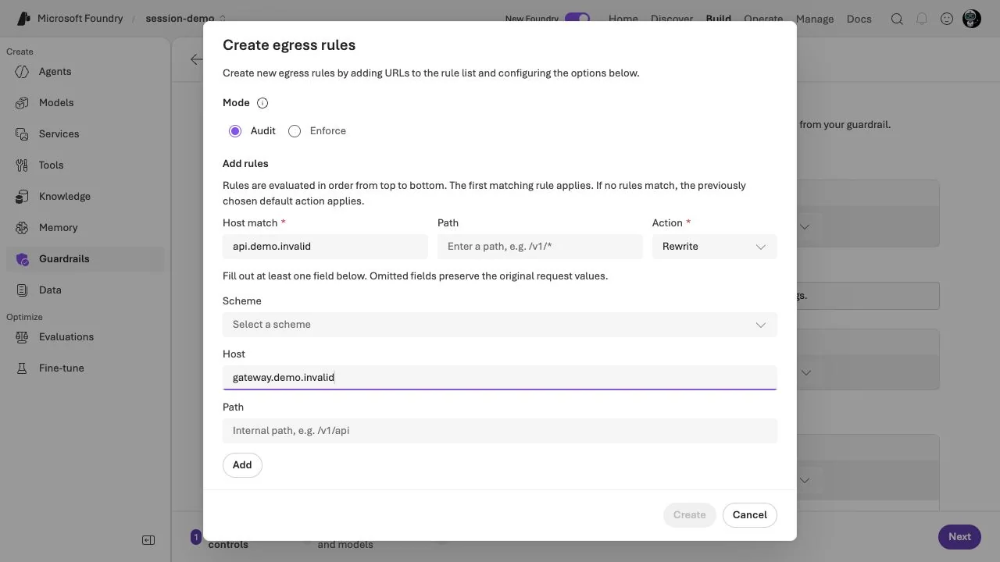
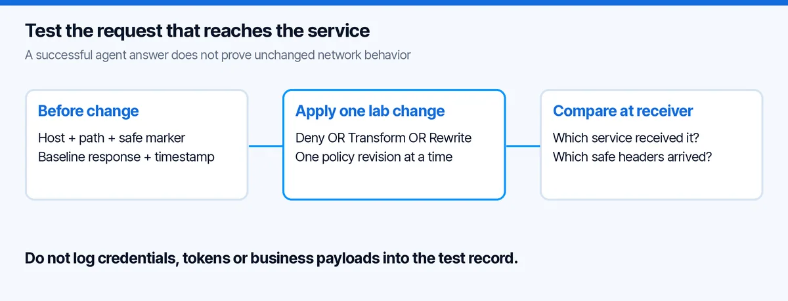

Foundry Egress Audit: Why Observe-Only Can Change Requests
Foundry egress audit sounds like a safe way to observe traffic without changing it. For hosted-agent egress controls, I would first ask: which actions are in the policy?
Audit changes how Deny behaves. It does not make Transform and Rewrite passive. A policy intended for observation can therefore still change headers or redirect a request.
I opened the current Foundry portal in my Modern Device Management tenant, checked the actual rule editor and prepared a small offline review tool. The portal screenshots below are real; the example rules were not saved or assigned to an agent.
The first thing I checked: which workload is covered?
In my project, the entry point was Build â Guardrails â Create â Network â Egress rules â Add rules.
The page explicitly says that these network controls apply to hosted agents, not prompt-based agents or model deployments. That scope matters before discussing any rule outcome.

I also inspected the existing Operate â Compliance â Guardrails view. It listed model-deployment guardrails. I would not use that table as evidence that a hosted agentâs outbound traffic has an egress policy attached.
A model filter, a hosted-agent policy attachment and the requests emitted by the runtime are different objects. If the test record cannot name which one it refers to, it is too vague to be useful.
How Foundry Egress Audit Handles Deny, Transform and Rewrite
The current Microsoft documentation states that a denied request is logged rather than blocked in Audit. It also states that Transform and Rewrite run in both modes. The feature is in preview. Hosted-agent egress controls.

My takeaway is not âAudit is unsafe.â It is that the change review must inspect the action, not just the mode label. An Audit policy containing only allow/deny decisions has a different operational effect from one that rewrites destinations.
This is exactly the sort of distinction I want in a pull request. âAudit onlyâ should not be accepted as a substitute for reading the policy.
What the portal actually lets you configure
For the screenshot, I selected Audit, then Transform, and entered a fictional host plus a harmless marker header:
- Host match:
api.demo.invalid - Header:
X-Demo-Route - Operation:
Set - Static value:
audit-check

The .invalid names are deliberate placeholders, not endpoints I called. This view proves the editor exposes that combination. The documentation establishes its runtime semantics; I did not send traffic through a deployed rule.
I then selected Rewrite with another fictional destination:

That second screenshot is the reason I would review Audit changes as carefully as other routing changes. If the request goes to a different receiver, an unchanged agent answer is not enough to tell me what happened underneath.
My example: a service that returns its request marker
I would validate this with a tiny owned lab echo service, not a customer API. The service returns a non-sensitive test marker and records which route reached it. It must not reflect or log authentication headers.
The experiment has two independent questions:
- Did the runtime let the request continue or stop it?
- Did the request that reached the service retain its original destination and marker?
A test that checks only the agentâs final answer can miss the second question. The model may summarize an unexpected response convincingly.
I would give each test a unique X-Test-Case value and a UTC timestamp. At the receiver, retain only the test case, safe marker, route and status. There is no reason to collect bearer tokens or user content to validate routing.

The four cases I would run in a lab
The table is a proposed acceptance test, not results from my tenant session. It assumes a supported hosted-agent setup and an approved test endpoint.
| Case | Policy action | What to compare |
|---|---|---|
| A | Audit with a matching Deny | Does the call continue, and is the would-deny decision recorded? |
| B | Audit with Transform | Does the owned receiver see the intended marker change? |
| C | Audit with Rewrite | Which owned receiver gets the call, and which route does it see? |
| D | Enforced with the same Deny | Is the request prevented from reaching the receiver? |
Keep the request body and identity stable between cases. Otherwise you can end up attributing an authentication failure or a code change to the egress rule.
Before Case C, establish that both test receivers have compatible authentication and no real data. A redirect is not just another filter setting: it changes where the request goes.
Read the policy before deploying it
The RAI-policy resource contains separate content-safety and egress settings. Do not infer the egress mode from the top-level properties.mode. The documented egress API uses properties.egressPolicy, including its own mode and ordered rules. The ARM example uses Enforced, although the portal label is âEnforce.â RAI-policy resource reference.
For an existing exported JSON policy, this is the minimum offline check I would start with:
If you use Azure CLI, the read-only export can be made from the exact policy resource ID. Sign in to the intended test subscription first; do not use a write or deployment command for this step:
# POLICY_ID is the full ARM resource ID of your existing RAI policy.
az rest --method get \
--url "https://management.azure.com${POLICY_ID}?api-version=2026-05-15-preview" \
--output json > policy.jsonThe export reads the serviceâs current document. Save the collection timestamp with it. A locally edited file with the same name is not evidence of the currently deployed configuration.
import json
from pathlib import Path
policy = json.loads(Path("policy.json").read_text())
egress = policy.get("properties", {}).get("egressPolicy")
if not isinstance(egress, dict):
raise SystemExit("No egress policy found; do not infer one from content safety.")
if egress.get("mode") == "Audit":
for rule in egress.get("rules", []):
action = rule.get("action", {}).get("actionType")
if action in {"Transform", "Rewrite"}:
print(f"REVIEW: {rule.get('name')}: {action} still runs in Audit")This does not emulate Azure, validate the complete schema or establish that the policy is attached. It catches one specific review mistake before it becomes a runtime surprise.
I also prepared a fuller local checker with six unit tests. Those tests passed against a synthetic fixture: Audit mutations, mode changes, simple ordering, missing policy data, path-constrained rules and preservation of the input document. That is evidence about the checker, not evidence that a cloud policy has been enforced.
First match wins: the other easy mistake
Rules are evaluated in order, and the first matching rule applies. The portal states this next to the editor. A broad allow ahead of a narrow deny can therefore defeat your intended exception. Microsoftâs egress walkthrough.
Consider this deliberately incomplete review fixture, not a deployable resource:
[
{"name": "broad-allow", "host": "*.demo.invalid", "action": "Allow"},
{"name": "specific-deny", "host": "api.demo.invalid", "action": "Deny"}
]For the api.demo.invalid request, I would inspect the earlier broad rule before trusting the later exception. Reordering deserves the same review as changing the action itself.
The local checker intentionally handles only simple overlap patterns. It does not guess how every wildcard, path or normalization case behaves. For anything more complex, the exact request belongs in the runtime acceptance test.
A policy exists. Is it attached to this agent version?
I would keep four identifiers together: Foundry resource, policy resource ID, hosted-agent name and agent version. A screenshot of the policy editor proves neither attachment nor effect.
Microsoftâs attachment guidance uses rai_config.rai_policy_name on the hosted-agent definition. The useful verification is to read the agent version back and inspect that value. Attach and verify a hosted-agent guardrail.
Then I would compare the policy returned by the service with the reviewed policy file. If they differ, I would stop the test and explain the mismatch rather than collect a convenient result from the wrong revision.
This is especially important when a team keeps a previous agent version running while editing a new one. An âall greenâ request can simply have used the older deployment.
Rollback should restore a known route
My rollback plan would be written before adding the first Transform or Rewrite. Preserve the prior policy document and attachment, identify the known-good agent version, and define the small test that proves normal routing is restored.
I would not make âturn everything offâ the default response. That can remove protections unrelated to the failed change. Reverting one reviewed revision is easier to reason about than manually flipping several controls under pressure.
For the same reason, change only one dimension at a time: mode, host matching, action or destination. If all four change together, a failed call tells you very little.
Foundry Egress Audit: Common Questions
Does Audit leave every request unchanged?
No. For the documented hosted-agent network controls, Audit changes how Deny is enforced. Transform and Rewrite can still modify a matching request. Inspect the configured action before treating the policy as observation-only.
How can I check a Foundry egress audit policy safely?
First review the rules with the offline checker. Then use synthetic marker data and an approved echo endpoint to compare the original and received request. The four-case test matrix above distinguishes baseline, deny, transform and rewrite. The local checks in this article are not a substitute for that live test.
What other controls belong beside egress policies?
Use Foundry network and identity controls for the broader boundary, and agent tracing and evaluation to investigate a run. These answer different questions from a receiver-side egress test.
What I would require before leaving the pilot
| Question | Evidence |
|---|---|
| Is the workload in scope? | Hosted-agent definition, not only a model deployment |
| Is the correct policy attached? | Read-back of the intended agent version and policy ID |
| Does the rule match the intended request? | Exact host/path case with an identifiable test marker |
| Does Audit mutate anything? | Receiver-side comparison for Transform and Rewrite |
| Does the deny enforce as intended? | Correlated result and absence of receiver execution |
| Can we reverse the change? | Recorded rollback and repeated baseline test |
If you are starting with a code-created agent, my Foundry Python agent walkthrough covers that earlier step. Here the focus is the boundary around its outbound requests.
The useful lesson is small enough to remember: Audit is not a promise that the request stays unchanged. Read the action, then inspect what reaches the receiver.